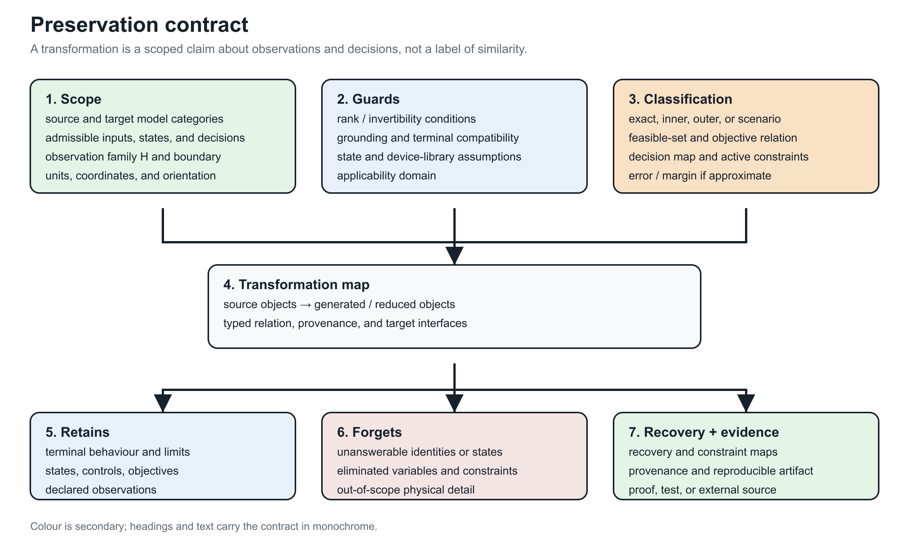
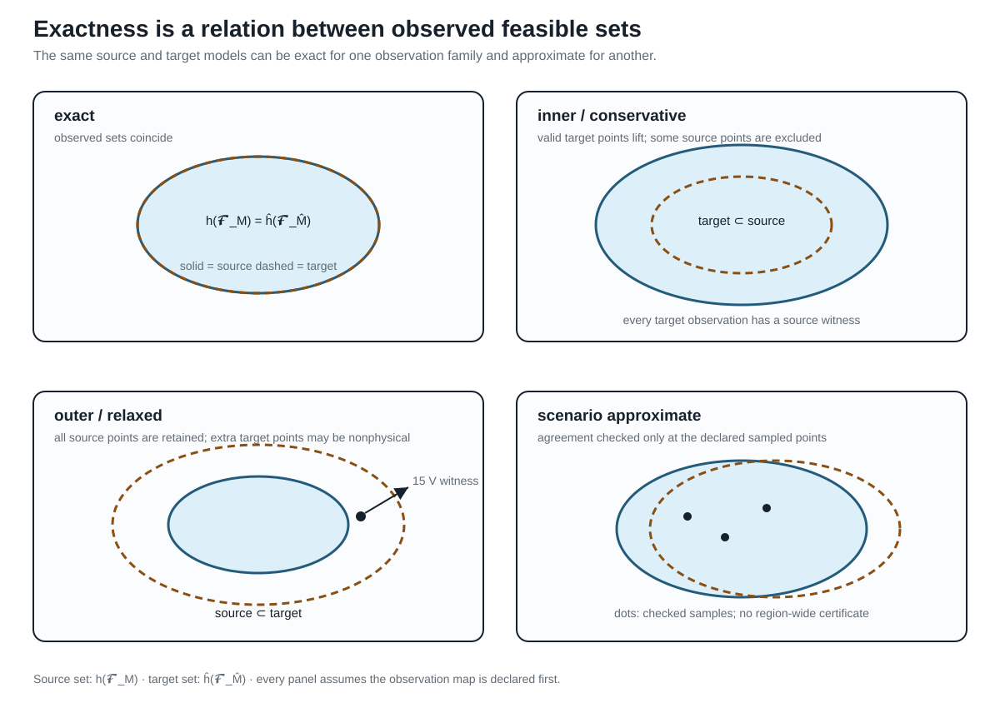
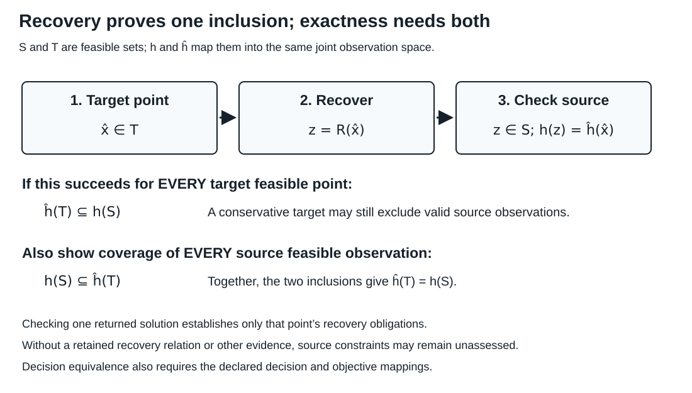

Preservation contracts
Page status: foundational definitions; certificate requirements are normative proposals.
Scope: observation-indexed feasible-set equivalence and preservation contracts for declared model classes. Evidence: definitions, linear recovery derivations, and scoped certificate examples. Numerical optimality: certificate examples are not global optimality proofs. Unresolved boundary: general nonlinear, mixed-integer, uncertainty-aware, or externally reviewed preservation theorems.
Observation precedes equivalence
Let $u\in\mathcal U$ be a fixed admissible input and let $\mathcal F_M(u)$ and $\mathcal F_{\widehat M}(u)$ be the source and target feasible sets at that input. Their internal coordinates may differ. Choose joint observation maps into the same observation space,
\[O_M(x,z,u)=(h_1(x,z,u),\ldots,h_k(x,z,u)),\qquad O_{\widehat M}(\widehat x,u)=(\widehat h_1(\widehat x,u),\ldots, \widehat h_k(\widehat x,u)).\]
Definition (PRESERVE-001). The transformation is exact for these observations and this input domain when
\[\left\{O_M(x,z,u):(x,z)\in\mathcal F_M(u)\right\} = \left\{O_{\widehat M}(\widehat x,u): \widehat x\in\mathcal F_{\widehat M}(u)\right\}, \qquad u\in\mathcal U.\]
The joint map retains relationships between observed quantities. Equality of individual observation ranges is weaker. For example, the sets $\{(0,0),(1,1)\}$ and $\{(0,1),(1,0)\}$ have identical coordinate ranges, yet maximizing the sum of their coordinates gives 2 and 1. A test of each coordinate separately would miss that difference. A declared family of maps may replace the single joint map only when it includes the joint observations needed for the claim.
For a decision problem, include the decisions whose preservation is claimed in the joint observation, and require the same objective function of those observations (or include objective value as another joint coordinate). Equal joint feasible images then give equal attainable observed decisions and objective values. Equality of optimal values does not alone imply the same decisions; existence of an optimizer and source-state recovery remain separate obligations. If $u$ is itself optimized, rather than supplied as input, its admissible domain and source/target correspondence must also be preserved. All statements concern the declared feasible models, not a solver's ability to find their solutions.
Matching terminal equations or separate voltage and current ranges does not establish equality of joint constrained feasible observations. Declare the input domain, jointly observed decisions and quantities, objective correspondence, and required recovery map.

The card is generated by experiments/render_preservation_contract_card.py. It is a compact reading aid for the certificate fields below; it is not a replacement for the quantified definition or the machine-readable schema.
The book now separates four layers that are often collapsed under the word “preservation”: typed structure, constitutive behaviour, decision semantics, and provenance/ownership. See Transformation semantics and register for the definitions, closure rules and anti-pattern register. A certificate should be explicit when it preserves only one of these layers.
Preservation dimensions
A transformation certificate should identify which dimensions it preserves:
\[\begin{aligned} \Sigma=\{\,&\text{connectivity},\ \text{terminal behavior},\ \ \text{phase/neutral behavior},\\ &\text{asset identity},\ \text{limits},\ \ \text{switching states},\ \text{measurements},\\ &\text{protection},\ \text{spatial provenance},\ \ \text{dynamics}\}. \end{aligned}\]
This is not a binary checklist. Each item needs a precise scope. For example, "terminal behavior" might mean:
- linear phasor behavior at one frequency;
- nonlinear steady-state behavior;
- an impedance function over a frequency interval;
- time-domain behavior for a specified initialization class;
- a scenario-bounded approximation to voltage magnitudes only.
Proposed certificate schema
The field table in this section is a non-normative v1.2 proposal. The machine-checked repository schema remains version 1.1.0 and deliberately does not yet require an $error_bound$ field or a normalized numerical-evidence object. Implementations must validate against the versioned JSON schema; the proposal below is a compatibility target for a future schema revision, not an implicit requirement on current certificates.
Every transformation record should contain:
| Field | Meaning |
|---|---|
source_type, target_type | model categories and schema versions |
rule_id | stable identifier for the rewrite or compiler rule |
scope | source objects affected |
preconditions | structural, physical and state assumptions |
preserves | formal or testable preservation claims |
forgets | questions no longer answerable |
provenance | source-to-target and target-to-source object maps |
recovery_map | reconstruction of eliminated variables where possible |
constraint_map | exact, conservative or approximate lifting of limits |
error_bound (v1.2 proposal) | norm, domain and bound for approximate transformations |
evidence | theorem, derivation, test suite, or external reference |
Compact BMOPFTools decision-manifest gate
Cross-repository object PSK-000007 connects the observation-indexed definition above to BMOPFTools contract decision_preservation_manifest_completeness. The package does not attempt to re-prove the general equivalence definition. It checks a narrower declaration boundary for version 0.1.0 manifests that explicitly claim exact decision_equivalence.
Such a manifest must name the transformation, source model, and target model, then give admissible domain, terminal behavior, observations, constraints, decision variables, objective, and recovery an explicit disposition. A verified disposition needs an evidence reference; not_required needs a justification. An omitted dimension creates an evidence gap, while not_preserved or unassessed contradicts the exact decision-equivalence claim. A terminal-only or conservative claim lies outside the gate and is not treated as a failure.
The minimized package fixture claims exact decision equivalence after citing only a terminal-relation certificate. The gate rejects that overclaim. Its evidence-complete companion passes only at the manifest layer: the package has not authenticated the references, checked the constraint or recovery maps, compared feasible sets or objectives, or established optimizer or solver equivalence. Those remain case-specific scientific and executable obligations.
The same boundary applies to the compact Kron guardrail. Cross-repository object PSK-000008 connects the tutorial warning that Kron reduction is an assumption—not a free simplification—to BMOPFTools contract kron_boundary_recovery_preservation. Its four-wire-to-three-wire check requires perfect grounding of the eliminated neutral at both endpoints, ordered phase coordinates, the neutral Schur complement, and an explicit recovery declaration. A floating or finite-grounded neutral fails the precondition even when the target matrix matches numerically; a pass says nothing about internal limits, protection, full feasible sets, objectives, or solver results.
Exact, conservative, and approximate maps
Operational constraints deserve a classification independent of the equations:
- Exact: reduced and original feasible observable sets coincide.
- Inner/conservative: every reduced feasible point lifts to an original feasible point, possibly excluding valid original points.
- Outer/relaxed: every original feasible observation is retained, but the reduced model may admit nonphysical points.
- Scenario approximate: accuracy is measured over a specified sample or uncertainty distribution.
A claim that a reduction "preserves limits" is incomplete without identifying which of these meanings applies.

This is the visual version of the classification. The sets are observed sets, not raw internal state spaces: the observation map $h$ is part of the contract. The $15 V$ point is the scalar parallel-line witness from the first failure case; it lies in the outer target's extra region and therefore cannot be called a preserved member limit.
Recovery maps are first-class
If internal variables are eliminated by a Schur complement, their recovery is often available algebraically. For a partitioned linear nodal model,
\[\begin{bmatrix}i_B\\i_I\end{bmatrix} = \begin{bmatrix}Y_{BB}&Y_{BI}\\Y_{IB}&Y_{II}\end{bmatrix} \begin{bmatrix}v_B\\v_I\end{bmatrix},\]
and $i_I=0$, the internal voltage is
\[v_I=-Y_{II}^{-1}Y_{IB}v_B.\]

A recovery map that sends every target feasible point to a source feasible point with the same joint observation establishes $\widehat h(\widehat{\mathcal F})\subseteq h(\mathcal F)$. Equality also requires the reverse inclusion: every source feasible observation must be represented in the target. A conservative target can satisfy the recovery obligation while excluding valid source observations. Checking one returned solution establishes only that point's obligations, not either set-wide statement. Decision and objective preservation require their declared mappings.
The reduced admittance is
\[Y_{\mathrm{red}}=Y_{BB}-Y_{BI}Y_{II}^{-1}Y_{IB}.\]
Kron reduction preserves the selected boundary relation, and is well characterized for loopy Laplacians [18]. It does not by itself preserve equipment identity, sparsity, protection zones, or individual branch limits. Storing the recovery operator permits evaluation of some original quantities without pretending the reduced branches are physical assets.
Compositionality requirement
A strong preservation framework should be compositional: replacing a subsystem by a certified equivalent should remain valid when that subsystem is connected to an admissible environment through its declared ports. The black-box functor for passive linear networks formalizes this principle for terminal current–potential relations [19].
For power systems, the open problem is to extend this idea to typed conductors, nonlinear devices, discrete controls, limits, uncertainty, and decision variables without losing useful computational structure.